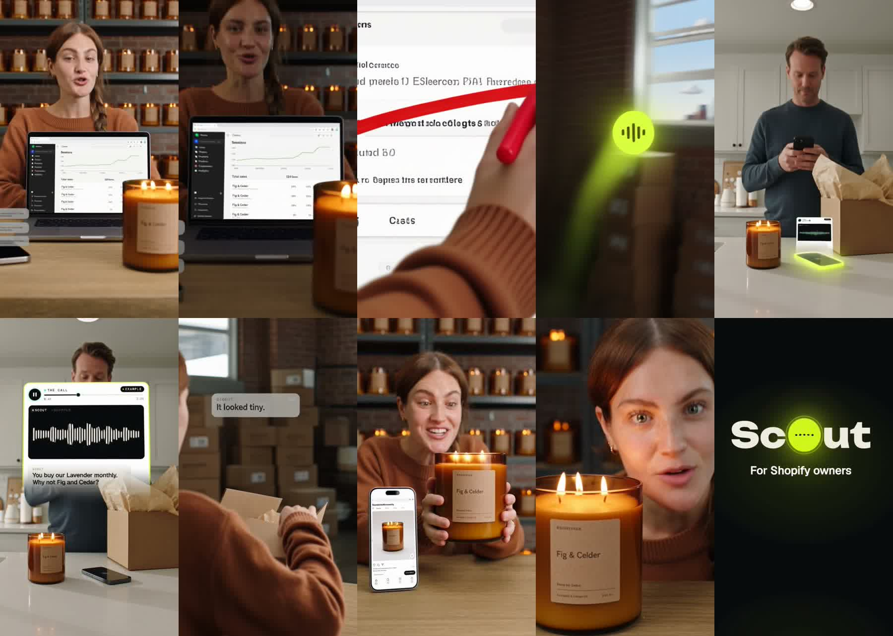
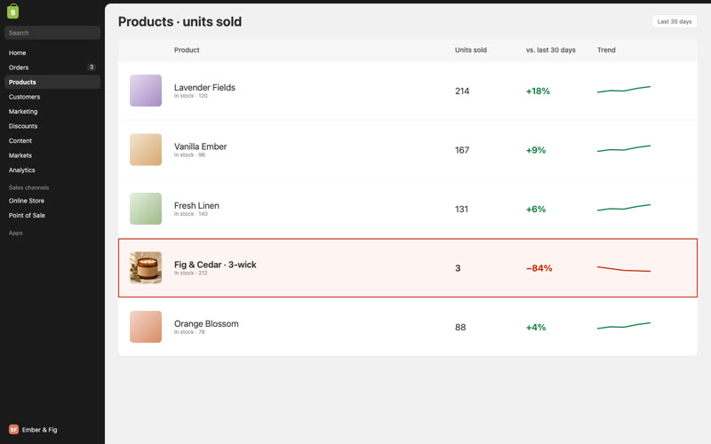
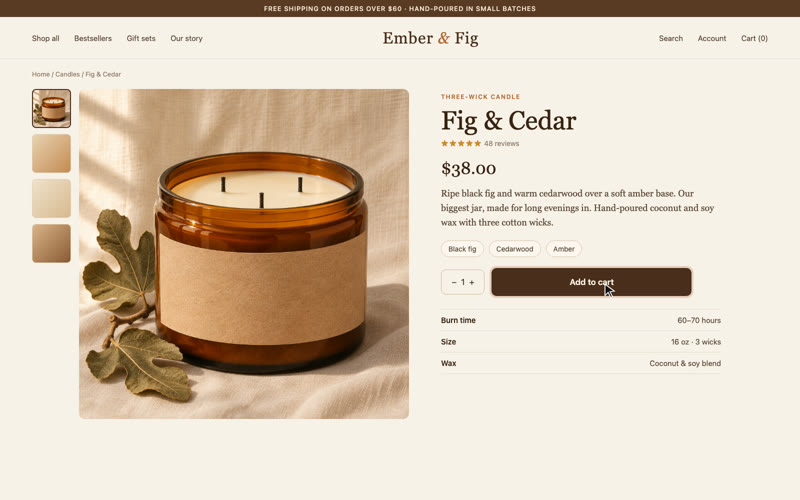
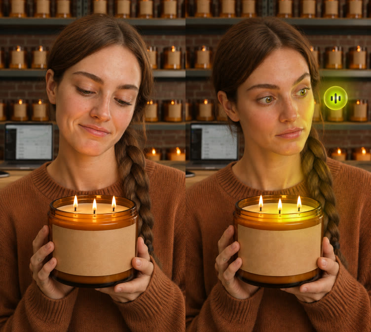
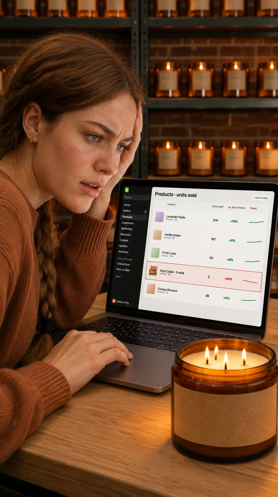
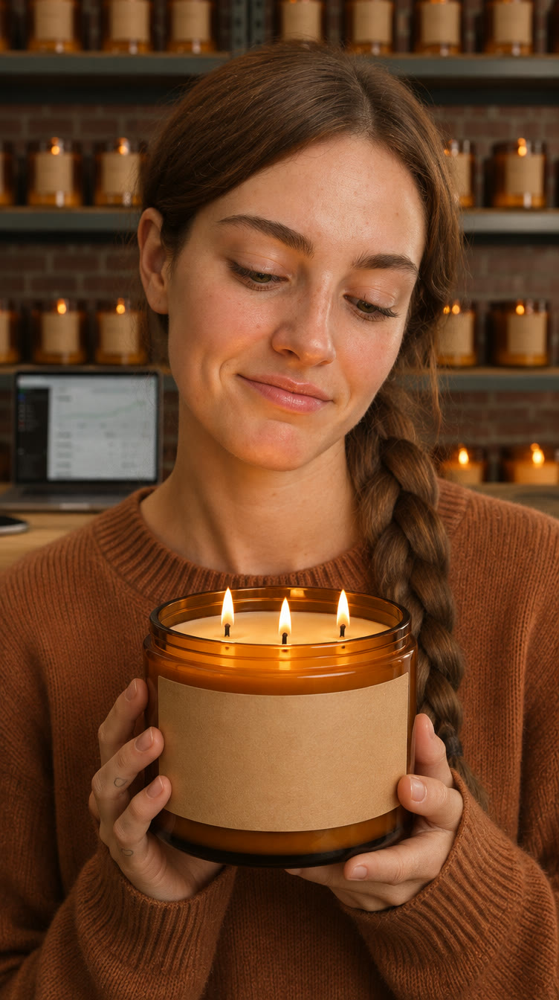
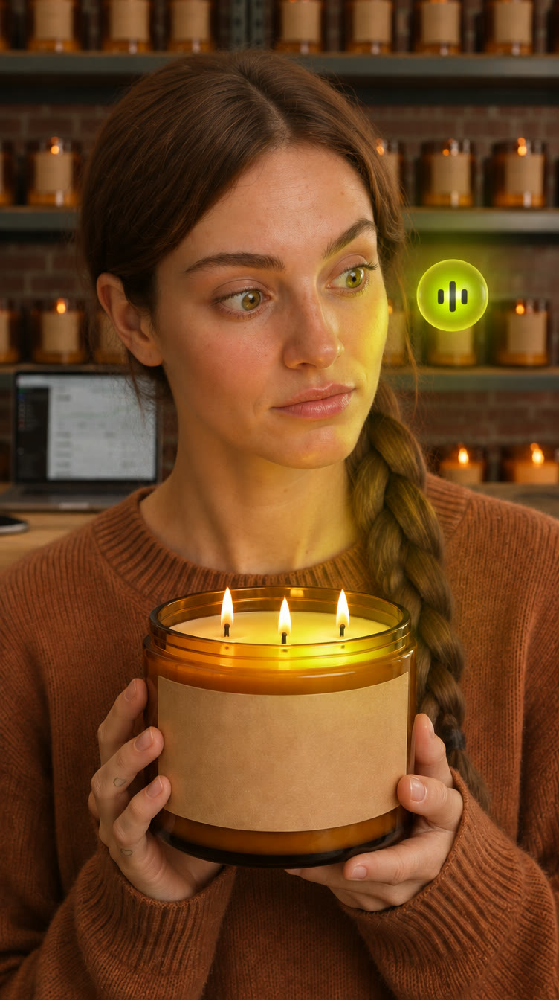
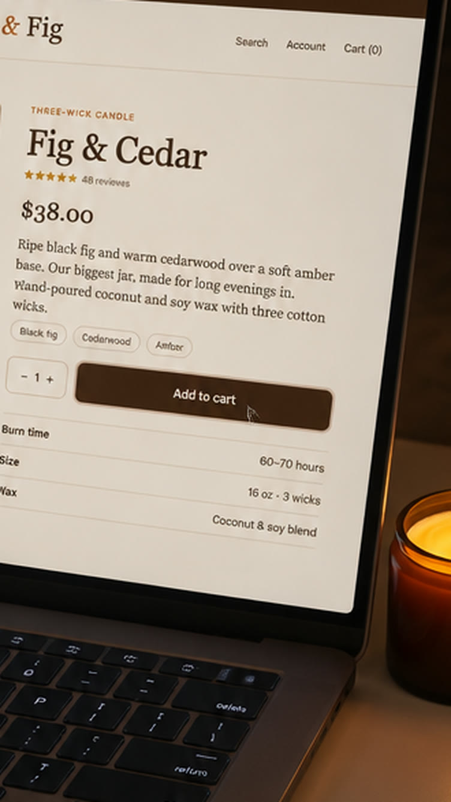

The difference from the other versions: eight finished full-colour keyframes fix what each moment looks like, in order, and the film moves from one to the next.
15 files, uploaded in this order: 10 images (8 keyframes + 2 faces), 2 videos (9.5 s), 3 audio (21.0 s). Everything else on this page is an illustration and is not sent. sd25-pe check: SD25-CHECK.md (final pass: zero FAILs).
H226 · H216 · Team C · Seedance 2.5 technique: Multi-keyframe reference · round 2 (judge fixes applied)
One answer away
Eight real-looking frames carry the whole story: a woman on her sofa at night, a candle lit, her cat wandering by, one click from buying Fig & Cedar, until a question nobody answered stops her. Then the flip into The Dip's own studio, where the same jar looks like a flop. Seedance only fills the motion between frames we've already approved, so the shopper's room and the owner's world can't drift.
Why keyframes fit this story. The guide: "When the video must strictly follow the storyboard, use keyframe references. Input each storyboard as an independent reference image in order, and state in the first sentence of the prompt: 'Use Images X to X in order as keyframes.'" Prompt guide · Advanced · Keyframe reference Keyframes make "the generated video visuals … align relatively strictly with the input images", while a multi-panel storyboard "mainly provides a high-level plot reference". Prompt guide · Task instructions · Unlocked: reference tasks, storyboards, and keyframes
Emile's story turns on things that must look exact: a dark, quiet room with a candle and a cat; a product page that never mentions pets; her lips closed while we hear her think; and, after the flip, the woman from The Dip in her studio, her hands on the jar. If Seedance improvised any one of these, the ad would break: a bright room loses the night, a page that mentions pets loses the point, and a different studio loses The Dip. So each one is a photo, and the prompt only adds motion, sound and lines. ByteDance's optimizer: keyframes "control stage order and visible states; they do not promise frame-by-frame replication". sd25-pe · Keyframe Anchors · Controlling the Order of Multiple Keyframes
Lessons applied from H217: each world is built on one room reference (the shopper's cast photo, or a frame of The Dip), so the room can't jump. Scout appears only in Image 7, an edit of the clean Image 6, so he can't leak in early. Image 8 is a free crop of Image 2.
Round 2: the judge's nine must-fixes are done (see Eval). Four new stills: Image 2 re-shot on the same sofa with clean page copy, Image 3 with sealed lips and her own younger face, Image 5 with a three-wick jar and a dry squint. Images 6, 7 and 8 were fixed locally for free. The original round-1 frames are kept in extras/round1/.
Text to send: 1,534 words (sd25-pe compile)10 images (8 keyframes + 2 faces)2 videos (4.5 s + 5 s = 9.5 s)3 audio (21 s total)seedance_2_5 · omni_referencedraft · 480p · 9:16 · 30 s · audio on90 credits (get_cost re-run Nov 14 with all 15 assets incl. Audio 3; quote only, nothing spent) · one passStills: 7 + 4 (round 2) × gpt_image_2_6 = 2.75 credits
Image 1 0-3s The shopper at home, nightImage 2 3-6s Over the shoulder: the product pageImage 3 6-9s The thought, close-upImage 4 9-11s Guess not: lid downImage 5 13-16s The owner and the flat rowImage 6 16-19s Goodbye to the jarImage 7 19-22s Scout pops upImage 8 22-25s One question away
Reference assets, in upload orderUpload in exactly this order; every chip in the prompt links to its card. The faces come after the keyframes so the first sentence can read "Images 1 to 8 as keyframes" Advanced · Keyframe reference. Each card says what the asset provides and what not to take from it Tutorial · Prompt rules.
<image1>
Keyframe 1 · 0-3s
The shopper at home, night
Provides: Her sofa, the floor lamp, one lit candle by the laptop, the cat walking behind her, her hand on the mouse. Sets the whole shopper world: dark, quiet, candle people.
Use / avoid: Take the room, light, cat and pose. Not a new outfit or a brighter room.
Provides: the same sofa and room as Image 1, laptop on her lap, mouse on the cushion, the candle on the side table. The Ember & Fig page for Fig & Cedar, $38.00, cursor on Add to cart, with clean copy ("FREE SHIPPING ON ORDERS OVER $50", "Hand-poured", emberandfig.com/products/fig-and-cedar). The keyboard is in soft shadow so no garbled keys show.
Use / avoid: take the screen and the angle. Do not invent other page text.
Provides: the inner-voice face. Her lips are fully sealed and the worry is in her brows and eyes. Screen light, the candle at the side, the cat out of focus behind her. Her face was pulled back to Image 1.
Use / avoid: take the closed mouth and the look. Not speech, not glowing eyes.
Provides: actress 14 in The Dip studio, her hand on the trackpad, with a dry, puzzled squint (The Dip's self-mocking tone, not alarm). The Shopify products list shows Fig & Cedar outlined in red (3 sold, -84%). The three-wick jar is lit beside it, and kraft mailers sit behind.
Use / avoid: take the room, screen and jar. Not a new studio.
gpt_image_2_6 job ad9d5a4a-60bb-4470-9e3c-9f1edb0654fd · edit of round-1 job ff236d15 + Image 6 jar
<image6>
Keyframe 6 · 16-19s · round 2
Goodbye to the jar
Provides: her hands on the product in close framing, as in The Dip, holding the lit three-wick jar. A clean plate with no orb. Round 2: the laptop behind her now shows Image 5's products list with the red Fig & Cedar row (pasted in and softened to match the depth of field), not a rising chart.
Use / avoid: take the hold and the room. Not tears.
media d9c52d05-0f39-47db-82a6-b7aca4ae63b3 (job 04356b96 + local screen fix)
<image7>
Keyframe 7 · 19-22s · round 2
Scout pops up
Provides: the same frame as Image 6, with the lime orb beside her, above the jar, and her eyes on it. Its background screen got the same red-row patch, so Images 6 and 7 still match pixel for pixel outside the orb.
Use / avoid: take the orb size, colour and place. Not lime light on her eyes.
media 930ad239-8509-4859-b400-972a47917fbe (job 9ac280bf + the same local screen fix)
<image8>
Keyframe 8 · 22-25s · round 2
One question away
Provides: a re-crop of the new Image 2 showing the price and the Add to cart she never clicked, with a faint lime rim glow around the button, as the prompt says.
Use / avoid: take the page, the cursor and the glow. Not a filled cart.
media acb8804a-4584-4b2d-93e5-4e885c5e8a67 (local crop of job 8ab31276 + glow)
<image9>
Identity · owner
Actress 14 (The Dip)
Provides: her face and auburn side braid, so all three owner keyframes and the motion between them stay the woman from The Dip.
Not: the background of this photo.
refs/face-actress-14.png · media 1963a66d-94e4-4fdc-95e5-b34fde48ea4f
<image10>
Identity · shopper · round 2
The shopper (shared cast)
Provides: her face and dark bob with bangs. It is now a tight crop of the cast photo, so there is no second room or cat for the model to copy.
Not: its background or its open mouth (her lines are thoughts). The room comes from Images 1 to 4.
media 1db5a36d-6f7b-47ff-81c6-62c8ed215983 (crop of cast/shopper.png, Soul 2 media 24babbac)
<video1>
25-30s · 4.5 s
End screen: talking "o" (H158)
Provides: only the picture of the final shot at 25-30s: the Scout wordmark whose "o" is the orb, the line under it and the button.
Not: its sound (Scout\'s voice for all three lines comes only from Audio 3), and none of it before 25s. Seedance doesn\'t promise frame-exact playback, so in the edit we splice the real H158 end card over 25-30s.
media cae62718-ec02-41f6-8e36-1de097e8427d
<video2>
11-13s · 5 s · round 2
High flip: camera move only
Provides: the camera move only: rise, flip over the top, land in a new place. With no keyframe between 4 and 5, this keeps the transition reliable.
Not: its people, places, colours or sound (the sound is stripped).
media 969c55f0-0fa1-4e69-b138-0f171ff227fa · Higgsfield Viral "High flip" 93a606f8, cut 2.5-7.5 s
<audio1>
Owner voice: Alexandra (9.2 s)
Provides: the timbre, accent and pace The Dip used for her. Cut from the 16.8 s file at a pause to sit near the guide's 5-10 s.
Not: its words; the prompt's lines win.
media c2ed3b9e-2050-423f-a203-9574a997b68c (from refs/voice-alexandra.mp3)
<audio2>
Shopper inner voice: Serene (7.3 s)
Provides: a soft, calm young voice for her thoughts. Cut from the 11.4 s cast file at a pause.
Not: its words or any on-screen lip movement.
media 2049a920-1fdc-4534-bbc6-2d490619c449 (from cast voice-shopper-serene.mp3)
<audio3>
Scout voice (4.5 s)
Provides: Scout's timbre and pace for all three of his lines (19-30s). Cut from Video 1's own sound track, so his voice matches the end card exactly, and Video 1 keeps one role (the end shot).
Not: its words; the prompt's lines win.
media 1040c108-8833-40b5-a3f0-943deab45436 (cut of a/video1-end.mp4 audio, 0-4.5 s)
Not uploaded (already baked into the keyframes): cast product-page.png, owner-sales.png, jar.png, the Dip studio frame, the ka-ching sound file (the ka-ching is written into the prompt instead, as a <> sound effect at 0-3s on a first notification, per Emile's Nov 14 rule; Scout's entrance has no chime or ka-ching) and the Scout logo. Sending them too would give the model a second, competing version of the same thing sd25-pe · principle 3: list unused assets.
Prompt A below is our earlier prompt.txt, kept for comparison only, and is not sent. Some of its lines (for example Scout's voice from Video 1) were replaced in B on Nov 15.
Our prompt (A), annotatedThe one to send is the sd25-pe compile (B) in Ours vs sd25-pe: same story, lines and keyframes, with one role per asset and a language label on every line. Split into the guide's four parts Basic prompting techniques. Dialogue is "Character's line (emotion): {…}" FAQ · Subtitles generated despite prompt constraints; the inner voice is V.O. with lips closed; sound effects are in <> Tutorial · Prompt rules. Timestamps are whole seconds with no gaps Basic · Timestamps. No ratio or duration in the text sd25-pe · principle 7.
1 · Asset mapping
Use Images 1 to 8 in order as keyframes. Each keyframe sets the composition, room, light, props and on-screen text of its own time range; move naturally from one keyframe to the next. Please note that this is not video editing.
Image 9 is the owner: take only her face and auburn side braid; do not use its background. Her voice takes only timbre, accent and pace from Audio 1: a warm, dry, slightly husky American woman; do not use its words.
Image 10 is the shopper: take only her face and dark bob with bangs; do not use its background, the room comes from Images 1 to 4. Her inner voice takes only timbre, accent and pace from Audio 2: a soft, calm young American woman, close-mic; do not use its words.
Scout is the small glowing lime-green orb in Image 7; he first appears at 19s. Before 25s, take only Scout's voice from Video 1: calm, friendly, slightly processed; do not use its black background, wordmark or button in any earlier shot.
Video 2 gives only the camera move of the 11-13s high flip; do not use its people, places, colours or sound.
2 · One-sentence summary
At night, a shopper on her sofa almost buys the Fig & Cedar candle from Ember & Fig but quietly gives up because the page never says if it is safe for her cat; across town the owner, in her warm candle studio, reads the flat sales as nobody wanting it, until Scout, a floating lime orb, stops her; a quiet, warm, real live-action story ad.
3 · Detailed plot
0-3s (reference: Image 1): The shopper on her sofa, lamp and one candle lit, quiet house. Her cat walks along the back of the sofa. <a ka-ching from a first notification on her laptop> <two soft mouse clicks> Her lips stay closed.
Shopper (V.O., inner voice, pleased): {Ooh. Fig and Cedar.}
3-6s (reference: Image 2): Hard cut over her shoulder to the laptop on her lap, the candle glowing on the side table. The cursor glides onto Add to cart and stops there.
Shopper (V.O., inner voice, hesitant): {Is this one safe for my cat?}
6-9s (reference: Image 3): Slow push in on her face lit by the screen, lips closed, brows drawn; the cat sits behind her, out of focus.
Shopper (V.O., inner voice, unsure): {It doesn't say anywhere on the page.}
9-11s (reference: Image 4): <a click> She closes the tab and lowers the laptop lid; the cat steps onto the cushion beside her.
11-13s (reference: Video 2, camera move only): High flip: the camera rises above her, flips over overhead and lands on the other side in the owner's candle studio. <a fast whoosh>
13-16s (reference: Image 5): The owner leans into her laptop with a dry, puzzled squint, the Fig & Cedar row outlined in red, the three-wick jar burning beside it.
Owner's line (puzzled): {Huh. I thought Fig and Cedar would sell way more.}
16-19s (reference: Image 6): Close-up: she lifts the lit three-wick Fig & Cedar jar in both hands and looks down at it; her small smile fades into a rueful press of the lips.
Owner's line (resigned, quietly): {Guess I'm discontinuing it.}
19-22s (reference: Image 7): Scout pops up beside her, above the jar; she lifts her eyes to it, curious.
Scout's line (calm, kind): {Don't guess. Ask them.}
22-25s (reference: Image 8): Hard cut back to the shopper's product page as it was a moment before she closed it, the cursor resting on Add to cart, a faint lime glow around it.
Scout's line (warm, certain): {She had one question. Nobody asked.}
25-30s (reference: Video 1): The ending follows Video 1: Scout's talking orb on black, with Scout's line from it: {Scout interviews your shoppers for you. Get free early access.} Its last frame holds until 30s.
4 · Additional notes
Live action, real skin, warm low light: the shopper's room is dark with lamp and candle glow; the owner's studio is warm amber with shelves of lit candle jars. Hard cuts, a new visual every 2 to 3 seconds; the only transition is the high flip at 11s. The shopper's lips stay closed; we only hear her thoughts. Each spoken line finishes inside its own time range. Exactly three voices: the shopper's inner voice (Audio 2), the owner (Audio 1) and Scout (Audio 3). (Soft, warm piano music plays very low under speech, lifting a little at 25s) Generate dialogue strictly as written; do not add or remove lines. No subtitles.
Shot listA new visual every 2-3 s, as in The Dip. At most 3 spoken words per second in any shot, and the flip gets its own 2 s (H217 lesson). 53 spoken words.
Time
Shot size
Angle
Movement
Transition
Sound
Line
Inspiration
0-3s
Medium-wide
Eye level, slightly high
Static, a gentle drift
Opens on Image 1
<ka-ching> on a first notification, <mouse clicks>, quiet room tone, soft piano
V.O. "Ooh. Fig and Cedar."
The Dip opening rhythm (first word by 1 s); cast still
Owner: "Huh. I thought Fig and Cedar would sell way more."
The Dip 0-3 s (her at the laptop, jars behind)
16-19s
Close-up, jar in hands
Eye level
Static
Hard cut
Candle crackle
Owner: "Guess I'm discontinuing it." (smile fades to a rueful lip press)
The Dip 18-23 s (she holds the jar)
19-22s
Close-up
Eye level
Tiny push as the orb rises
Hard cut, orb pops in
None: no chime or ka-ching on Scout (Emile, Nov 14)
Scout: "Don't guess. Ask them."
The Dip orb lift-off (5.6-8 s)
22-25s
Insert, screen
On her laptop screen, no person
Static, faint lime glow
Hard cut back to her page as it was before she closed it
Quiet room tone
Scout: "She had one question. Nobody asked."
Re-crop of the new Image 2
25-30s
End screen
Front
As Video 1
Hard cut
Music lifts
Scout: "Scout interviews your shoppers for you. Get free early access."
H158 talking "o"
Illustration, not sent to SeedanceHigh flip (Higgsfield Viral 93a606f8): "the camera rises above the subject and flips overhead, revealing a new character and location on the other side." Our 11-13s flip from her sofa into the studio.Illustration, not sent to SeedanceEyes in (Higgsfield Viral a5e06af0): we borrow only its slow push onto the face at 6-9s, so the thought feels intimate. No dive into the pupil.

Illustration, not sent to SeedanceThe Dip (H174), the vibe to match. Brick wall, shelves of lit amber jars, rust sweater, side braid, hands on the jar. Images 5 to 7 were built on one frame of this film.
The eight keyframesThis technique's special asset: the film, frame by frame. The flip lives between frames 4 and 5.
0-3s1. The shopper at home, night3-6s2. Over the shoulder: the product page6-9s3. The thought, close-up9-11s4. Guess not: lid down13-16s5. The owner and the flat row16-19s6. Goodbye to the jar19-22s7. Scout pops up22-25s8. One question, nobody asked
How they were made
Illustration, not sent to SeedanceThe only room reference for Images 5-7: one frame of The Dip at 2.2 s (media 09ae0b86).

Illustration, not sent to SeedanceThe cast's Shopify products screen, copied onto her laptop in Image 5. The text stayed accurate.

Illustration, not sent to SeedanceThe cast's Ember & Fig product page, copied onto the shopper's laptop in Image 2. No word about pets, on purpose.

Illustration, not sent to SeedanceImage 6 (a clean plate) and Image 7 (the same frame edited to add Scout). Scout exists only from 19s.
Risks and how this pitch handles them
Face drift between the two women. Each world has its own face reference (Images 9 and 10) and its own room keyframes. Dark bob and cream cardigan vs auburn braid and rust sweater.
The shopper's lips moving. Image 3 now has her lips sealed, and the prompt says so twice. If a take still moves them, fix it with an edit pass (about 18 credits for 5 s) rather than a 90-credit retake.
Image 6 still smiles while she says the resigned line (flagged again by the independent check, fix 4). No still budget was spent to re-shoot it, since Image 7 would then need re-deriving too; if Emile gives a go before the Render card, re-shoot Image 6 with a neutral, rueful mouth and re-derive Image 7. The prompt asks her smile to fade into a rueful lip press, so the motion carries the beat.
The pasted screen in Images 6 and 7 is a soft, background-only patch. At 480p it reads as the same red-row list as Image 5. Some hair edges in Image 7 are slightly cut out, but only in a defocused corner.
Lime light on her eyes in Image 7 could come out as glowing eyes FAQ · Glowing eyes. Her direction is "curious", with no strong emotion words.
The end card. Reference generation can't guarantee exact playback, so we splice the real H158 card over 25-30s in the edit sd25-pe · Aspect Ratio and Duration Compatibility Gate.
Subtitles at 9:16. No spoken words are repeated as visuals, and the only on-screen text is in the images FAQ · Text spelling errors.
Round 1 → round 2Every keyframe that changed, oldest first. Round-1 frames are kept in extras/round1/.
Illustration, not sent to SeedanceR1Image 2Desk setup, garbled banner and keysR2Image 2Same sofa, clean copy, keys in shadowIllustration, not sent to SeedanceR1Image 3Biting her lip, older faceR2Image 3Lips sealed, her own face

Illustration, not sent to SeedanceR1Image 5Four flames, hand clutching her headR2Image 5Three wicks, dry squint, mailers

Illustration, not sent to SeedanceR1Image 6Rising green chart behind herR2Image 6Red-row products list behind her

Illustration, not sent to SeedanceR1Image 7Rising chartR2Image 7Same red-row list as Image 6

Illustration, not sent to SeedanceR1Image 8Crop of the garbled page, no glowR2Image 8Crop of the clean page, faint lime glow
Ours vs ByteDance's optimizer (sd25-pe)Emile, Nov 14: run the final prompt through ByteDance's sd25-pe skill to check every input is right for the model, show the compiled prompt next to ours, and say which to send. This round the real skill loaded (Skill tool "sd25-pe", from .claude/skills/sd25-pe/SKILL.md); its self-update command couldn't run here, so it used the local copy.
Send B, the sd25-pe compile (prompt-sd25pe-final.txt, 1,534 words). The Render card runs its prompt through sd25-pe anyway, so this is the version that will go out. It keeps everything ours had and fixes four gaps the optimizer found.
Emile's check
A · ours
B · sd25-pe
Each asset has one role
Mostly. Image 7 is both a keyframe and "Scout's look", and the roles are spread over one paragraph.
One line per asset, 15 lines, each saying what to take and what not to take. Scout's look comes only from keyframe 7. Video 1 is only the end shot; Scout's voice for all three of his lines (19-30s) now comes from Audio 3, a 4.5 s clip cut from Video 1's own sound, so no asset carries two roles.
Unused assets listed
Not stated.
All 15 uploads have a role, so the unused set is empty and sd25-pe adds no 【Unused Assets】 block (it lists them only when some are left over).
Exact dialogue
9 lines in {}, but no language per line, and Scout's end line sits inside the shot description.
The same 9 lines, word for word (diffed). Each has its own speaker label with "in English", on or off screen, and the owner keeps her mouth closed while Scout speaks.
() <> {} sound marks
Correct: music in (), 5 sound effects in <>, lines in {}.
The same marks. No names sit inside <>.
No ratio or duration in the text
Clean.
Clean: no 9:16, 480p or "30-second video". The 0-30s ranges are the story's own beats, which sd25-pe keeps.
Routing line
"Please note that this is not video editing." is there.
Same line, placed after the goal sentence as the template says. It applies because Video 1 (4.5 s) and Video 2 (5 s) are not the 30 s output.
What I re-checked by hand after the compile: all 9 spoken lines are identical in A and B. Every "(reference: Image N)" in A is still in B, in order. The keyframe technique is intact: the guide's exact sentence, "Use Images 1 to 8 in order as keyframes." Advanced · Keyframe reference, is now the very first sentence of B, above 【Generation Goal】, as the guide requires (the optimizer had reworded it and buried it in the asset block), there is one short line per keyframe, and each time range still points at its frame. The Dip pace line ("Hard cuts, a new visual every 2 to 3 seconds; the only transition is the high flip at 11s") is kept; the earlier by-hand compile had dropped it. I cut the keyframe lines to a few words each so they don't describe the frames twice.
Changed on Nov 15: B now has the keyframe template's standalone "Use Image 1 as the first frame." plus a sentence describing that frame. The "not video editing" line stays, because this is an omni_reference job (the keyframes go in as ordinary reference images, not the API first-frame slot) with 4.5 s and 5 s reference videos against a 30 s output, which fires sd25-pe's gate.
Unsure: B is 1,534 words against ours at 750, and ByteDance's own 30 s examples run 380-740. sd25-pe sets no word cap, and the extra words are mostly the asset lines Emile asked for. If the take drifts or crowds the shots, the first thing to cut is the 【Subjects and Relationships】 block.
A · Ours · 756 words · prompt.txt
Use Images 1 to 8 in order as keyframes. Each keyframe sets the composition, room, light, props and on-screen text of its own time range; move naturally from one keyframe to the next. Please note that this is not video editing.
Image 9 is the owner: take only her face and auburn side braid; do not use its background. Her voice takes only timbre, accent and pace from Audio 1: a warm, dry, slightly husky American woman; do not use its words.
Image 10 is the shopper: take only her face and dark bob with bangs; do not use its background, the room comes from Images 1 to 4. Her inner voice takes only timbre, accent and pace from Audio 2: a soft, calm young American woman, close-mic; do not use its words.
Scout is the small glowing lime-green orb in Image 7; he first appears at 19s. Before 25s, take only Scout's voice from Video 1: calm, friendly, slightly processed; do not use its black background, wordmark or button in any earlier shot.
Video 2 gives only the camera move of the 11-13s high flip; do not use its people, places, colours or sound.
At night, a shopper on her sofa almost buys the Fig & Cedar candle from Ember & Fig but quietly gives up because the page never says if it is safe for her cat; across town the owner, in her warm candle studio, reads the flat sales as nobody wanting it, until Scout, a floating lime orb, stops her; a quiet, warm, real live-action story ad.
0-3s (reference: Image 1): The shopper on her sofa, lamp and one candle lit, quiet house. Her cat walks along the back of the sofa. <a ka-ching from a first notification on her laptop> <two soft mouse clicks> Her lips stay closed.
Shopper (V.O., inner voice, pleased): {Ooh. Fig and Cedar.}
3-6s (reference: Image 2): Hard cut over her shoulder to the laptop on her lap, the candle glowing on the side table. The cursor glides onto Add to cart and stops there.
Shopper (V.O., inner voice, hesitant): {Is this one safe for my cat?}
6-9s (reference: Image 3): Slow push in on her face lit by the screen, lips closed, brows drawn; the cat sits behind her, out of focus.
Shopper (V.O., inner voice, unsure): {It doesn't say anywhere on the page.}
9-11s (reference: Image 4): <a click> She closes the tab and lowers the laptop lid; the cat steps onto the cushion beside her.
Shopper (V.O., inner voice, soft sigh): {Guess not.}
11-13s (reference: Video 2, camera move only): High flip: the camera rises above her, flips over overhead and lands on the other side in the owner's candle studio. <a fast whoosh>
13-16s (reference: Image 5): The owner leans into her laptop with a dry, puzzled squint, the Fig & Cedar row outlined in red, the three-wick jar burning beside it.
Owner's line (puzzled): {Huh. I thought Fig and Cedar would sell way more.}
16-19s (reference: Image 6): Close-up: she lifts the lit three-wick Fig & Cedar jar in both hands and looks down at it; her small smile fades into a rueful press of the lips.
Owner's line (resigned, quietly): {Guess I'm discontinuing it.}
19-22s (reference: Image 7): Scout pops up beside her, above the jar; she lifts her eyes to it, curious.
Scout's line (calm, kind): {Don't guess. Ask them.}
22-25s (reference: Image 8): Hard cut back to the shopper's product page as it was a moment before she closed it, the cursor resting on Add to cart, a faint lime glow around it.
Scout's line (warm, certain): {She had one question. Nobody asked.}
25-30s (reference: Video 1): The ending follows Video 1: Scout's talking orb on black, with Scout's line from it: {Scout interviews your shoppers for you. Get free early access.} Its last frame holds until 30s.
Live action, real skin, warm low light: the shopper's room is dark with lamp and candle glow; the owner's studio is warm amber with shelves of lit candle jars. Hard cuts, a new visual every 2 to 3 seconds; the only transition is the high flip at 11s. The shopper's lips stay closed; we only hear her thoughts. Each spoken line finishes inside its own time range. Exactly three voices: the shopper's inner voice (Audio 2), the owner (Audio 1) and Scout (Audio 3). (Soft, warm piano music plays very low under speech, lifting a little at 25s) Generate dialogue strictly as written; do not add or remove lines. No subtitles.
B · sd25-pe compile · send this · 1,534 words · prompt-sd25pe-final.txt
Use Images 1 to 8 in order as keyframes.
【Generation Goal】
Generate a quiet, warm, live-action story ad. Please note that this is not video editing. At night a shopper on her sofa almost buys the Fig & Cedar candle from Ember & Fig but quietly gives up because the page never says whether it is safe for her cat; across town the owner, in her warm candle studio, reads the flat sales as nobody wanting it, until Scout, a small floating lime-green orb, stops her.
【Reference Asset Roles】
Use Image 1 as the first frame.
This first frame defines the shopper (Image 10) on her sofa at night in her dark living room, laptop on her lap, the lamp and one small candle lit, the grey tabby cat walking along the sofa back behind her, in a medium-wide shot at eye level.
Image 2 defines the second keyframe: over the shopper's (Image 10) shoulder, the product page on her laptop, the cursor on Add to cart.
Image 3 defines the third keyframe: the shopper's (Image 10) screen-lit face, lips closed, the cat out of focus behind her.
Image 4 defines the fourth keyframe: the laptop lid lowered, the cat beside the shopper (Image 10).
Image 5 defines the fifth keyframe: the owner (Image 9) at her laptop in her candle studio, the Fig & Cedar row outlined in red, the lit three-wick jar beside it.
Image 6 defines the sixth keyframe: the owner (Image 9) holding the lit three-wick jar in both hands.
Image 7 defines the seventh keyframe: the same frame with Scout's lime-green orb beside the owner (Image 9), above the jar.
Image 8 defines the eighth keyframe: the shopper's product page close up, Add to cart glowing faintly lime.
Each keyframe sets the composition, room, light, props and on-screen text of its own time range; the film passes through Images 1 to 8 in order, cutting from one keyframe to the next as the Event Script says, with no static hold.
Image 9 is used only for the owner's facial features and auburn side braid; do not use its background or pose.
Image 10 is used only for the shopper's facial features and dark bob with bangs; do not use its background or its open mouth.
Video 1 is used only for the picture of the final shot at 25-30s: the Scout wordmark whose "o" is the orb, the line under it and the button; do not use its sound, and show none of it before 25s.
Video 2 is used only for the High flip camera move at 11-13s; do not use its people, places, colours or sound.
Audio 1 is used only for the owner's voice quality, speaking rate and emotion (warm, dry, slightly husky); do not use its words.
Audio 2 is used only for the shopper's inner-voice quality, speaking rate and emotion (soft, calm, close-mic); do not use its words.
Audio 3 is used only for Scout's voice quality, speaking rate and emotion (calm, friendly, slightly processed) for all three Scout lines; do not use its words.
【Subjects and Relationships】
There is one shopper (Image 10), one owner (Image 9), one grey tabby cat, one Fig & Cedar jar and one Scout. The shopper wears the cream knit cardigan from Images 1 to 4; she stays in her own dark living room and never meets the owner. The owner wears the rust knit sweater from Images 5 to 7; she stays in her candle studio. The Fig & Cedar jar is a wide amber jar with a blank kraft label and three wicks, only in the owner's studio; its photo also appears on the shopper's product page (Images 2 and 8). The grey tabby cat belongs to the shopper and appears only in her room. Scout is one small lime-green orb, first seen in Image 7 at 19s; it is the same orb that becomes the "o" in Video 1.
【Event Script】
0-3s (reference: Image 1) [Opening shot. Medium-wide, eye level, static with a gentle drift]: The shopper (Image 10) on her sofa, lamp and one candle lit, quiet house. Her grey tabby cat (as in Image 1) walks along the back of the sofa. <a ka-ching from a first notification on her laptop> <two soft mouse clicks> The shopper's (Image 10) lips stay closed.
The shopper (Image 10), V.O., inner voice, in the voice of Audio 2, pleased, in English: {Ooh. Fig and Cedar.} At the end, she is looking at her laptop.
3-6s (reference: Image 2) [Hard cut. Over-the-shoulder close, slow push toward the cursor]: Over the shopper's (Image 10) shoulder to the laptop on her lap, the candle glowing on the side table. The cursor glides onto Add to cart and stops there.
The shopper (Image 10), V.O., inner voice, in the voice of Audio 2, hesitant, in English: {Is this one safe for my cat?} At the end, the cursor rests on Add to cart.
6-9s (reference: Image 3) [Hard cut. Eyes in slow push: close-up, eye level, slow push in on the shopper's (Image 10) face, stopping before the eye]: The shopper's (Image 10) face lit by the screen, lips closed, brows drawn; the cat sits behind her, out of focus.
The shopper (Image 10), V.O., inner voice, in the voice of Audio 2, unsure, in English: {It doesn't say anywhere on the page.} At the end, her brows are still drawn.
9-11s (reference: Image 4) [Hard cut. Medium, eye level, static]: <a click> The shopper (Image 10) closes the tab and lowers the laptop lid; the cat steps onto the cushion beside her. At the end the laptop is closed and nothing has been bought.
The shopper (Image 10), V.O., inner voice, in the voice of Audio 2, soft sigh, in English: {Guess not.}
11-13s (reference: Video 2, camera move only) [High flip, the only non-cut transition: crane up and flip 180 degrees overhead]: The camera rises above the shopper (Image 10), flips over overhead and lands on the other side in the owner's candle studio. <a fast whoosh> At the end, the camera is level in the studio.
13-16s (reference: Image 5) [Lands from the High flip. Medium close over the laptop, eye level, small push to the red row]: The owner (Image 9) leans into her laptop with a dry, puzzled squint, the Fig & Cedar row outlined in red, the three-wick Fig & Cedar jar (as in Image 5) burning beside it.
The owner (Image 9), on screen, in the voice of Audio 1, puzzled, in English: {Huh. I thought Fig and Cedar would sell way more.} At the end, her eyes are on the red row.
16-19s (reference: Image 6) [Hard cut. Close-up, eye level, static]: The owner (Image 9) lifts the lit three-wick Fig & Cedar jar in both hands and looks down at it; her small smile fades into a rueful press of the lips.
The owner (Image 9), on screen, in the voice of Audio 1, resigned, quietly, in English: {Guess I'm discontinuing it.} At the end, the lit jar is in both her hands.
19-22s (reference: Image 7) [Hard cut, orb pops in. Close-up, eye level, tiny push as the orb rises]: Scout's lime-green orb (as in Image 7) pops up beside the owner (Image 9), above the jar; she lifts her eyes to it, curious, her mouth naturally closed while Scout speaks.
Scout, from the orb, in the voice of Audio 3, calm, kind, in English: {Don't guess. Ask them.} At the end, she is looking at the orb.
22-25s (reference: Image 8) [Hard cut back to the shopper's page. Insert on the shopper's laptop screen, static, faint lime glow]: The shopper's product page as it was a moment before she closed it, the cursor resting on Add to cart, a faint lime glow around it. No person is on screen.
Scout, off screen, in the voice of Audio 3, warm, certain, in English: {She had one question. Nobody asked.} At the end, the cursor still rests on Add to cart.
25-30s (reference: Video 1) [Hard cut. End screen, front, as Video 1]: Scout's orb becomes the "o" of the Scout wordmark on the end screen, following the picture of Video 1.
Scout, off screen, in the voice of Audio 3, calm, friendly, in English: {Scout interviews your shoppers for you. Get free early access.}
At the end, the last frame of Video 1 holds until 30s.
【Maintain Consistency】
Live action, real skin, warm low light: the shopper's room is dark with lamp and candle glow; the owner's studio is warm amber with shelves of lit candle jars. Hard cuts, a new visual every 2 to 3 seconds; the only transition is the High flip at 11s. Keep both women's identities, clothing and hair stable. The shopper's lips stay closed; we only hear her thoughts. Each spoken line finishes inside its own time range. Exactly three voices: the shopper's inner voice (Audio 2), the owner (Audio 1) and Scout (Audio 3). (Soft, warm piano music plays very low under speech, lifting a little at 25s) Generate dialogue strictly as written; do not add or remove lines. No subtitles appear on screen.
Eval
Nov 15 · sd25-pe check (SD25-CHECK.md): pass 1 found 6 FAILs (Video 1 still carried Scout's voice; no "Use Image 1 as the first frame."; an "American" accent added to two voices; shots named no actor with a face image; the gate line out of place; the Eyes in move not named). All fixed: Video 1 is the picture only, Audio 3 is Scout for all three lines, the first-frame sentence is in, the accent is gone, and every keyframe and shot says "the shopper (Image 10)" or "the owner (Image 9)" with its move (Eyes in, High flip). After independent check 1, pass 3 also added an end state and a voice binding to every line; final pass: zero FAILs. The compile (B) is now 1,534 words. Same 15 uploads, spoken lines unchanged, 0 credits.
Independent judge, before round 2:
Goal 8Guide 8Story 8.5Craft 6.5Overall 7.5
Judge's verdict (round 1): a strong keyframe pitch that follows the rules, but the stills needed fixing before any render: garbled product-page text, Image 2 on a desk instead of the sofa, a four-wick jar in Image 5, a rising chart behind the "flat sales" owner, no lime glow in Image 8, and parted lips in Image 3 under the V.O. "Regenerate KF2/KF8, KF3, KF5 and KF6/KF7, and make the four small prompt edits; it should then be ready for Emile's go."
Re-shot Image 2 with gpt_image_2_6 (job 8ab31276) from Image 1 + the cast product page, spelling out the banner, URL and description. It now reads FREE SHIPPING ON ORDERS OVER $50, Hand-poured and emberandfig.com/products/fig-and-cedar, and the keyboard sits in shadow. Image 8 was re-cropped from it.
Image 2 breaks room continuity (desk vs sofa)
The same re-shot uses Image 1 as its room reference: same sofa, laptop on her lap, mouse on the cushion, candle on the small side table, lamp and plant behind.
Image 5 jar has four flames
Edited round-1 Image 5 with Image 6's jar as reference (job ad9d5a4a). It now has exactly three wicks and three flames and the same jar shape as Images 6 and 7.
Images 6 and 7 show a rising green chart behind her
Pasted the cast owner-sales screen (the red Fig & Cedar row, -84%) onto the background laptop in both frames, blurred to the depth of field and masked around her hair in Image 7. I applied the same patch to Image 6 first, then to Image 7, so the clean-plate logic still holds. Free, done locally (media d9c52d05, 930ad239).
Image 8 has no lime glow but the prompt asks for one
Added a faint lime rim glow around Add to cart in the new Image 8 (local, free). The prompt line is kept.
22-25s reads as a continuity error
Reworded: "Hard cut back to the shopper's product page as it was a moment before she closed it, the cursor resting on Add to cart, a faint lime glow around it."
Image 3 bites her lip under the V.O.; the face drifts older
Re-shot Image 3 with lips fully sealed and the worry in her brows and eyes (job 837620a5). Then a face edit pulled her back to Image 1's younger face (job ed1ef0f1).
Music not in ()
Now reads "(Soft, warm piano music plays very low under speech, lifting a little at 25s)".
Video 1 has no do-not-take clause in the prompt
Added: "Before 25s, take only Scout's voice from Video 1; do not use its black background, wordmark or button in any earlier shot."
Nice-to-have
Suggestion
What happened
"Video 1 plays exactly as it is" promises frame-exact playback
Done. The line is now "The ending follows Video 1", and the page says to splice the real H158 end card over 25-30s in the edit.
Image 5 alarmed hand-to-head
Done in the same Image 5 edit: a dry, puzzled squint, hands down, lips pressed.
Image 6 smile reads fond, not resigned
Partly done. I had no still budget left (re-shooting it means re-deriving Image 7 too), so the prompt now asks her smile to fade into a rueful lip press.
Printed Fig & Cedar label on the jars
Skipped. It would need Images 5, 6 and 7 re-shot, and the shopper's product page jar has a blank label too, so blank stays consistent across both worlds.
Ember & Fig mailers in the Image 5 background
Done: a stack of kraft mailers behind the laptop.
The high flip has no keyframe or motion reference
Done. The 5 s High flip camera move (media 969c55f0, sound stripped) is now Video 2, limited to the camera move. Videos total 9.5 s, and the re-quoted cost stays 90 credits.
"She was one question away" contradicts "Don't guess"
Done: "She had one question. Nobody asked."
Spoken total 54, room for one more word
Left at 53. Each shot is already near 3 words/s, and the flip stays whoosh-only as its own 2 s beat.
Image 10 duplicates the room and cat
Done: a tight face crop of the cast photo (media 1db5a36d).
Verdict after round 2: all nine must-fixes are done. The keyframes now agree with each other and with the prompt: one sofa, one three-wick jar, a flat red row on every owner screen, sealed lips under the V.O., and a lime glow where the prompt names it. The prompt opens with the guide's keyframe sentence and has the PE routing line. Music is in (), and every asset has a role and a do-not-take clause. Re-quoted with get_cost: 90 credits (seedance_2_5, omni_reference, draft, 480p, 9:16, 30 s, audio on, 14 assets). Round-2 spend: 4 gpt_image_2_6 stills = 1.0 credit (2.75 credits in total). No video was generated. Ready for Emile's go. Re-judging is the next step.
 Image 9 owner face
Image 9 owner face Image 10 shopper face
Image 10 shopper face